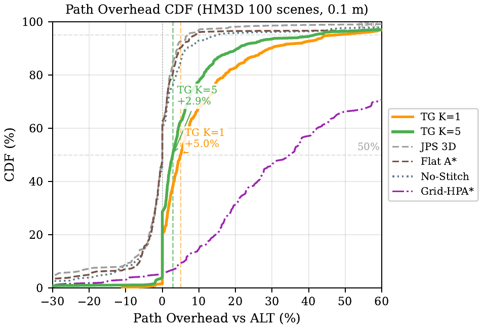
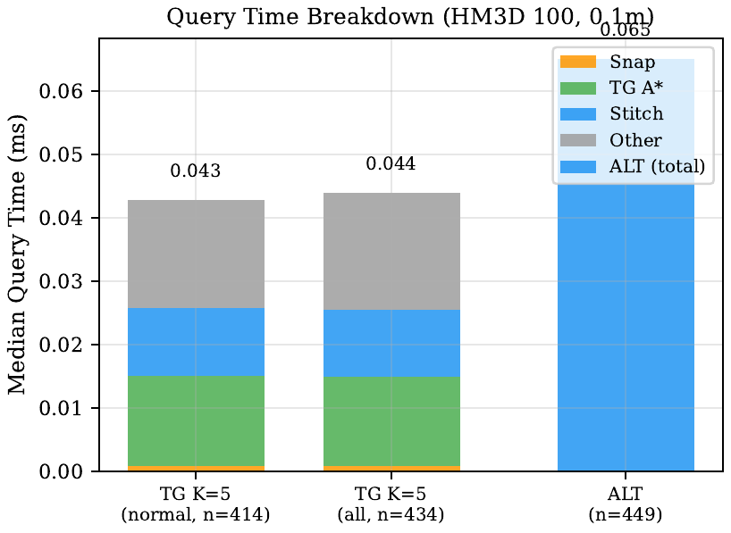
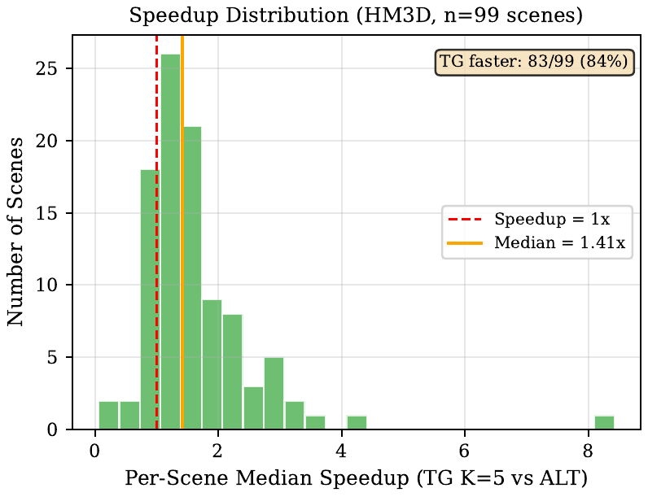

Speed and Quality Pareto
TG variants stay below the ALT median query time while keeping median overhead close to zero.
Beyond Geometry / Global Navigation
A persistent-homology room segmentation and transition-graph planner for fast indoor 3D navigation over surface voxel maps.
Median latency is reported in milliseconds. Overhead is relative to ALT on the full surface graph.
| Dataset | Method | Success | Valid | Median query | Mean query | P95 query | Mean OH | Median OH | Precompute |
|---|---|---|---|---|---|---|---|---|---|
| MP3D | ALT L=16 | 66.7% | 100.0% | 0.249 | 0.432 | 1.160 | - | - | 68.2 ms |
| MP3D | TG K=1 | 66.7% | 100.0% | 0.059 | 0.060 | 0.102 | +6.5% | +6.5% | 472.6 ms |
| MP3D | TG K=5 | 50.0% | 100.0% | 0.083 | 0.068 | 0.086 | +3.0% | +3.0% | 1007.6 ms |
| HM3D | ALT L=16 | 89.6% | 100.0% | 0.065 | 0.204 | 0.858 | - | - | 74.7 ms |
| HM3D | TG K=1 | 87.8% | 100.0% | 0.033 | 0.166 | 0.899 | +12.2% | +5.0% | 67.7 ms |
| HM3D | TG K=5 | 86.6% | 100.0% | 0.044 | 0.185 | 0.937 | +9.5% | +2.9% | 225.7 ms |
These are generated from the repository experiment outputs. Each card links to the source PDF.
TG variants stay below the ALT median query time while keeping median overhead close to zero.

CDF view of per-query path overhead relative to ALT, with median markers for TG K=1 and K=5.

Median query time and median overhead across 0.1 m, 0.075 m, and 0.05 m surface maps.


Median query time split into snap, graph search, stitching, and residual costs.

The planner compresses the surface graph into a transition graph using persistent homology.
| Stage | Role | Repository implementation |
|---|---|---|
| Surface graph | Voxelize walkable surfaces and compute traversal costs. | src/jps_planner_3d, src/occmap_tools |
| PH segmentation | Use persistence on clearance fields to identify rooms and portals. | src/topo_nav |
| Transition graph | Connect portals with room-local Dijkstra fields and crossing edges. | hierarchical_planner.cpp |
| ALT query | Run A* on the compact graph with landmark lower bounds. | alt_planner.cpp |
| Stitching | Reconstruct surface paths from cached parent trees. | hierarchical_planner.cpp |